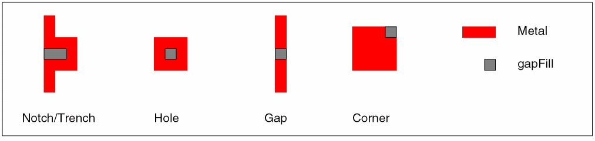

fill_notch
fill_notch
[ -all | -region {f_xlo f_ylo f_xhi f_yhi} ]
[ -lpp {s_layerlpp …} ]
[ -output_lpp {s_layerlpp…} ]
[ -width f_userunit ]
[ -trench_depth f_maxTrenchDepth ]
[ -trench_width f_maxTrenchWidth ]
[ -use_notch_spacing_rule [ true | false ] ]
[ -fill_notch_set d_setObj ]
[ -set d_setObj ]
[ -annotate [ all | none | filled | unfilled ]
[ -annotation_limit i_count ]
[ -clear_annotations [ all | none | filled | unfilled ]
[ -check_mode { hard | soft } ]
[ -exclude_net {s_netName…} ]
[ -exclude_type {[power] [ground] [clock]} ]
[ -fill_type { all | {[notch] [corner] [gap] [trench]}} ]
[ -ignore_active_route_status [ true | false ] ]
[ -prop_name s_propertyName -prop_value s_propertyValue ]
[ -trim_corners [ true | false ] ]
[ -top_level_only [ true | false ] ]
[ -use_fill_purpose [ true | false ] ]
Description
Adds metal fill to notches, holes, gaps, and trenches that are smaller than a minimum required size, or to corners that do not meet the oaMinEdgeAdjacentLength or minEdgeMaxCount rules. By default, the shapes are added to the gapFill purpose for the metal layer.
- A notch is a minimum spacing violation between two edges with a common adjacent side.
- A trench is a shallow notch, a user-defined width and depth violation between two edges with a common adjacent side where the notch width is greater than the notch depth.
- A hole is a minimum enclosure violation.
- A gap is a minimum spacing violation between two shapes on the same net and layer.
-
A corner is an
oaMinEdgeAdjacentLengthviolation between adjacent edges. If theoaMinEdgeAdjacentLengthrule is not set, then corners can beminEdgeMaxCountviolations.

Arguments
|
Specifies the annotations to create with this command. By default, annotations are not created. |
||
|
Creates annotations for notches, trenches, gaps, holes, and corners that are filled or left unfilled by this command. This is the default when the |
||
|
Creates annotations for notches, trenches, gaps, holes, and corners that are filled by this command. |
||
|
Creates annotations for notches, trenches, gaps, holes, and corners that are left unfilled by this command. |
||
|
Limits the total number of annotations that can be created by this command. A value of -1 specifies no limit. Default is 1000. |
||
|
Controls the lookup of constraints or rules used for checking. |
||
|
Checks soft (preferred) rules first, then will check against the hard rule if the soft rule is not found. This is the default. |
||
|
Specifies the fill notch annotations to remove before running this command. |
||
|
Removes all annotations previously created by this command. This is the default when the |
||
|
Removes annotations for notches, trenches, gaps, holes, and corners that were previously filled by this command. |
||
|
Removes annotations for notches, trenches, gaps, holes, and corners that were previously left unfilled by this command. |
||
|
Specifies the names of nets to exclude from processing. By default, all nets are considered. |
||
|
Specifies the net types to exclude from processing. By default, all net types are considered. |
||
|
Adds the new fill shapes to the given set. You can use this to add annotations to a highlight set. For example, this argument, -fill_notch_set [get_highlight -name HL1] |
||
|
When set to
Default: |
||
|
Specifies the layers and/or layer purposes to check. By default, all routing layers are checked. |
||
|
Creates fill shapes on a specific layer or purpose. By default, fill shapes are created on the |
||
|
Attaches the given property to the added fill shapes. Must be specified with |
||
|
Assigns the value to the property given by |
||
|
Specifies the boundary of the area to process, given the lower left and upper right coordinates. If not specified, the entire design is processed. |
||
|
Specifies that only top-level shapes be checked against all levels. Default is |
||
|
Specifies the maximum depth of a trench to be filled. If this argument is not given, trench filling will not occur. |
||
|
Specifies the maximum width of a trench to be filled. If this argument is not given, trench filling will not occur. |
||
|
Specifies that shapes be added to the |
||
|
Uses the |
||
|
Specifies the minimum width spacing. Fills notches, holes and gaps that are smaller than this width. By default, the minimum same net spacing from the technology file is used. |
||
Value Returned
Examples
The following example finds all Metal2 notches and holes that are smaller than 0.35 um wide and fills them with shapes on Metal2:gapFill.
fill_notch -all -lpp Metal2 -width .35 -fill_type notch
The following example fills corners by first setting the minimum edge lengths for adjacent edges, then issuing the fill_notch command to fill corners that do not meet the requirements within a region on Metal2.
set_constraint_parameter -name adjacentLength -Value 0.26
set_layer_constraint -layer Metal2 -constraint oaMinEdgeAdjacentLength -Value 0.2
fill_notch -lpp Metal2 -fill_type corner -region [get_window_area]
Related Topics
Return to top